Токио · Цукидзи · рынок
Внешний рынок Цукидзи: за тунцом, кацуобуси и комбу вместе со знатоком рыбы
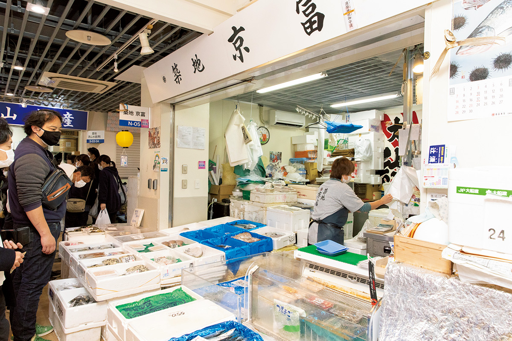
Многие любят рыбу, но едят её только в ресторанах: готовить дома кажется слишком сложно. Знаток рыбы, выросший на рынке Цукидзи, и повар японской кухни водят по внешнему рынку тех, кто хочет научиться выбирать и покупать рыбу самостоятельно.
Экскурсия
С двумя знатоками по рыбным рядам
Коити Огава родился в Цукидзи в 1956 году и вырос в семье оптовых торговцев рыбой: он представляет уже третье поколение. Когда-то он держал здесь же рыбный ресторан, написал несколько книг о том, как отличить по-настоящему вкусную рыбу, и подбирает рыбу для разных заведений. Ханако Усуи работает поваром японской кухни: она ведёт кулинарные курсы, изучает старую кухню Эдо и написала книгу о блюдах из химоно, вяленой рыбы. Вместе они устраивают прогулки по внешнему рынку Цукидзи, где покупатели учатся смотреть на рыбу глазами профессионала. Ниже их маршрут 2022 года.
Всё началось с того, что Ханако Усуи, по её собственным словам, долго видела рыбу только в том виде, в каком её привозили в ресторан. Как выбирать саму рыбу, она поняла, лишь когда познакомилась с Коити Огавой. Однажды она хотела купить серебристого помфрета, и он объяснил, что для маринада лучше взять рыбу, которая уже немного вызрела. Потом она попросила его провести по рынку учеников своего рыбного класса. До пандемии группа ходила по рядам, покупала рыбу, готовила её на кухне-студии внешнего рынка и тут же садилась за стол.
На прогулке, например, учатся выбирать тунца. Хороший тунец стоит недёшево, но и среди дорогого важно понять, какую часть и какой брусок брать и где у постного мяса не должно быть прожилок. А ещё Коити Огава подсказывает, как вкусно приготовить недорогого тунца. Ханако Усуи однажды сварила для группы суп «нэгима-дзиру» с тунцом и луком из обрезков, и все убедились, что и обрезки бывают отличными.
«Если думать, что хорошая рыба только дорогая, скоро мы вообще не сможем её есть. Если отказаться от рыбы с ферм, японцам почти нечего будет есть»
Ханако Усуи
Коити Огава считает, что лет через двадцать или тридцать дикая рыба станет чем-то вроде дичи: в ресторане скажут «сегодня у нас дикий морской лещ». На запасы влияет потепление, а у «синей» рыбы, особенно у ставриды и скумбрии, улов и без того меняется циклами по несколько десятилетий вслед за температурой воды, течениями и кормом. Раньше, когда не было ставриды, брали скумбрию, но супермаркеты держат и ту и другую круглый год, и это тоже истощает запасы. Покупателям, по мнению Ханако Усуи, стоит научиться готовить из той рыбы, что есть, а не требовать ставриду, когда её нет. Тем, кто любит рыбу, но боится её готовить, она советует начать с химоно: их достаточно поджарить, даже на сковороде, они уже идеально посолены, а ещё их можно заморозить и держать про запас.
Покупки
Семь лавок внешнего рынка
Рыбная лавка в корпусе Кайкобаси: что есть сегодня
Если не можете решить, что приготовить на ужин, начните отсюда. Эта лавка в корпусе Кайкобаси рынка «Цукидзи Уогаси» держит только вкусную сезонную рыбу, поэтому ошибиться трудно, а как лучше её приготовить, проще всего спросить у продавцов. По качеству её выделяют среди множества рыбных лавок рынка.
Рыбная лавка в корпусе Кайкобаси
- Адрес
- Токио, Тюо, Цукидзи, 6-27-1, «Цукидзи Уогаси», корпус Кайкобаси
- Телефон
- +81 80-3719-6417
- Часы работы
- 7:00–14:00
«Хиэй»: тунец от оптовика
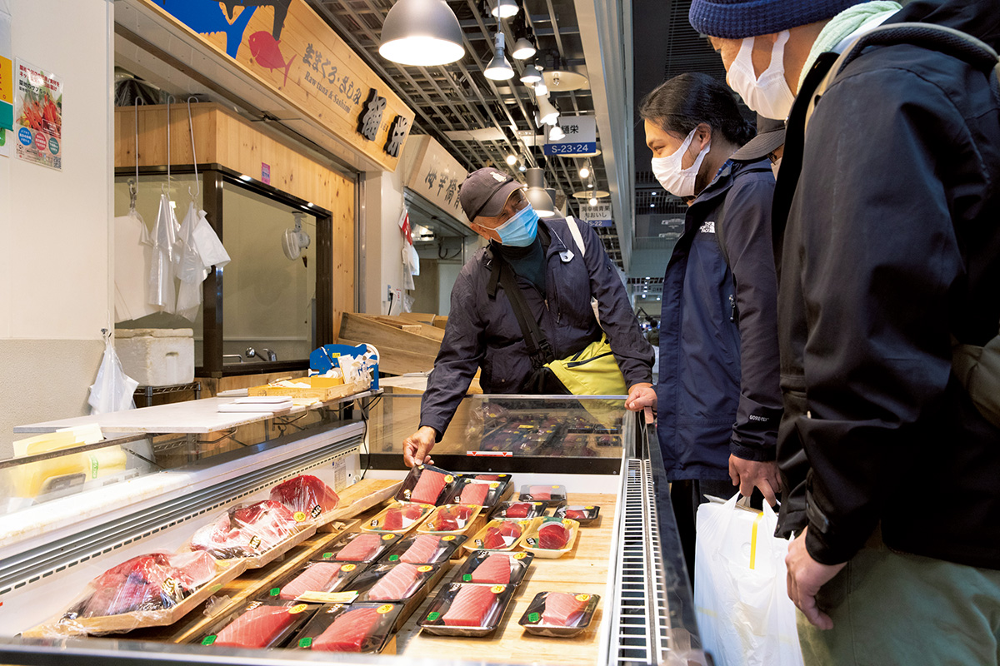
«Хиэй» это магазин оптовика, который торгует только тунцом на рынке Тоёсу. Тунца, купленного утром на торгах, здесь разделывают и режут на куски для продажи. Для разных блюд нужны разные части, поэтому лучше сразу рассказать продавцу, как вы собираетесь его есть. Выгодно брать «накаоти», мясо, соскобленное с хребта: из него получается отличный «накаоти-дон», чашка риса с тунцом.
«Хиэй»
- Адрес
- Токио, Тюо, Цукидзи, 6-27-1, «Цукидзи Уогаси», корпус Кайкобаси
- Телефон
- +81 3-6264-7015
- Часы работы
- 5:00–15:00
«Акияма сётэн»: кацуобуси, стружка с 1916 года
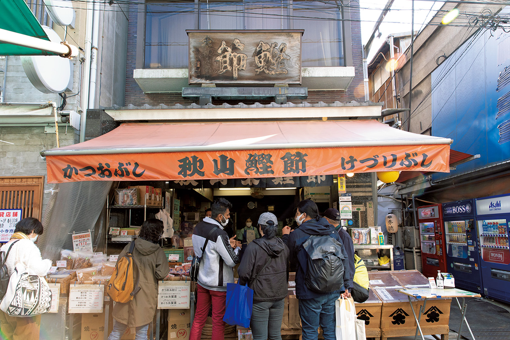
Кацуобуси, сушёного копчёного тунца-бонито, в «Акияма сётэн» продают с 1916 года. Лавка первой в Японии стала продавать готовую стружку, нарезанную прямо в магазине. Для изящного прозрачного супа стоит взять тонкую стружку из бонито высшего сорта, а для одэн, тушёных блюд и насыщенного бульона подойдёт смешанная стружка с добавлением скумбрии и ставриды «муроадзи». Здесь же продают рубанки для кацуобуси и прямо на месте показывают, как ими пользоваться. Свежая стружка пахнет так, что даже простой рис с кацуобуси становится праздничным блюдом.
«Акияма сётэн»
- Адрес
- Токио, Тюо, Цукидзи, 4-14-16
- Телефон
- +81 3-3541-2724
- Часы работы
- 5:30–13:30
«Яманои сётэн»: инструменты повара
С хорошим инструментом и готовить получается лучше. «Яманои сётэн» продаёт посуду и инструменты прежде всего для японской кухни: удобные вещи, придуманные вместе с поварами, бамбуковые палочки и декоративные шпажки, от которых блюдо на тарелке выглядит наряднее.
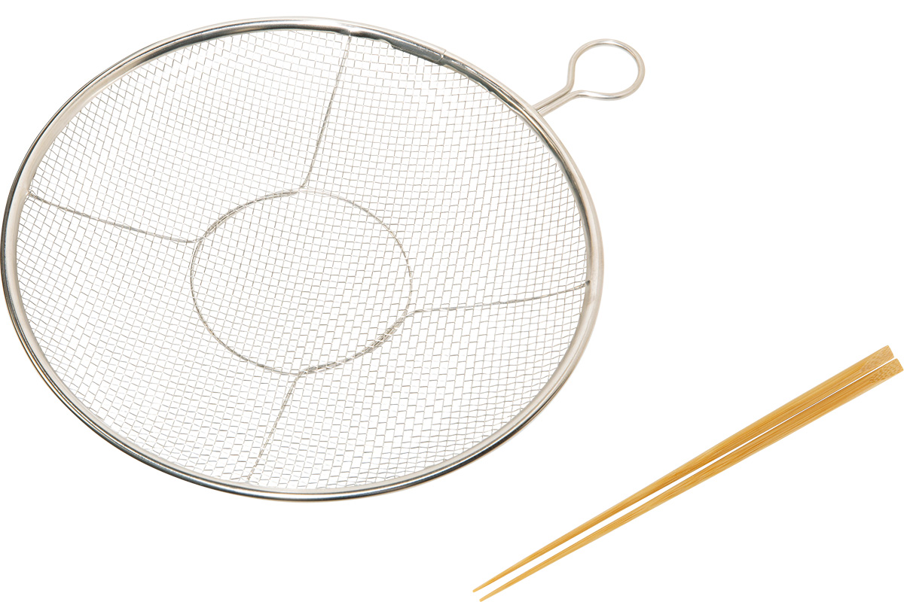
Плоское сито из нержавеющей стали оказалось очень удобным: оно помещается в посудомоечную машину, не занимает много места, а через него можно, например, протереть варёный картофель.
«Яманои сётэн»
- Адрес
- Токио, Тюо, Цукидзи, 4-12-6
- Телефон
- +81 3-3541-6772
- Часы работы
- 5:00–14:00
«Суйта сётэн»: комбу из Осаки
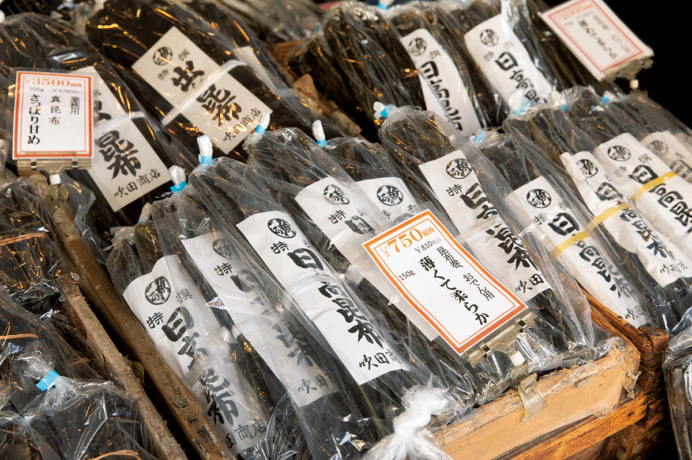
Комбу бывает очень разным: от района и вида зависит, как варить из него бульон и к каким блюдам он подходит. Оптовая лавка комбу «Суйта сётэн» основана в Осаке в 1892 году. Здесь продают «ма-комбу», «рисири-комбу», «хидака-комбу» и «раусу-комбу», выдержанные больше года: за это время уходят посторонние привкусы и остаётся насыщенный вкус. Бывают и редкие вещи, например «сироита-комбу», тонкие белые пластинки. Если не знаете, что выбрать, спросите у продавцов: в комбу они разбираются лучше всех.
«Суйта сётэн»
- Адрес
- Токио, Тюо, Цукидзи, 4-11-1
- Телефон
- +81 3-3541-6931
- Часы работы
- 6:00–14:00
«Цукидзи Ватанабэ»: моллюски
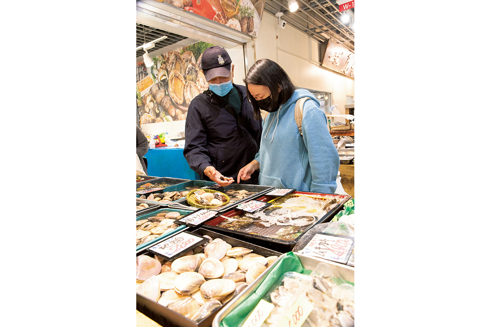
В лавке, где торгуют только моллюсками, по субботам собирают готовые наборы, например для аквапаццы из моллюсков и рыбы. Блюдо легко приготовить дома, а стоит такой набор недорого. В 2022 году на крыше корпуса «Цукидзи Уогаси» работала площадка для барбекю, открытая для всех, и купленных здесь моллюсков можно было тут же пожарить.
«Цукидзи Ватанабэ»
- Адрес
- Токио, Тюо, Цукидзи, 6-26-1, «Цукидзи Уогаси», корпус Одаварабаси
- Телефон
- +81 3-6264-7760
- Часы работы
- 6:30–15:00
SAN-EI SHOTEN: креветки
Живые лангусты исэ-эби, живые креветки курума-эби, живые омары: в этом с SAN-EI SHOTEN никто не сравнится. Сюда идут, когда нужно приготовить праздничный стол.
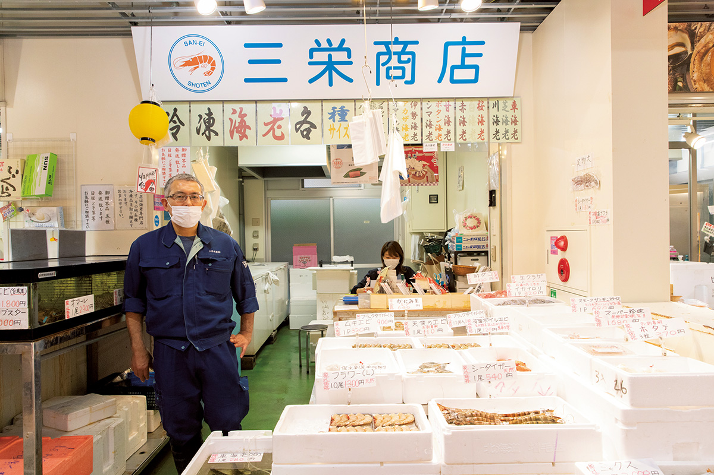
SAN-EI SHOTEN
- Адрес
- Токио, Тюо, Цукидзи, 6-26-1, «Цукидзи Уогаси», корпус Одаварабаси
- Телефон
- +81 3-6264-2247
- Часы работы
- 5:00–14:00
Обед
«Уогаси сёкудо» на третьем этаже
На третьем этаже «Цукидзи Уогаси» работает «Уогаси сёкудо», фудкорт, где без лишних церемоний можно попробовать блюда известных заведений Цукидзи. По словам Коити Огавы, лучше места для обеда здесь нет.
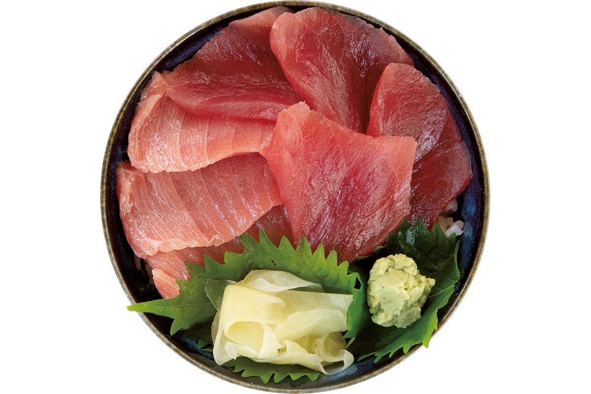
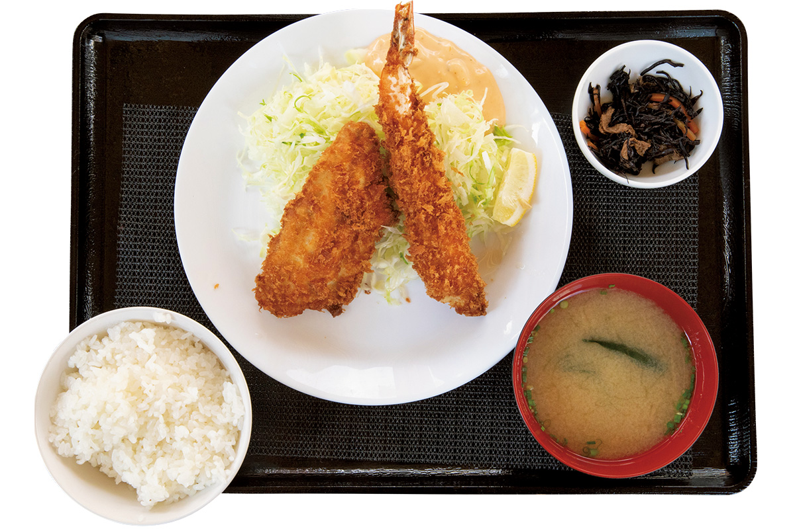
«Уогаси сёкудо»
- Адрес
- Токио, Тюо, Цукидзи, 6-26-1, «Цукидзи Уогаси», корпус Одаварабаси, 3-й этаж
- Выходные
- внешний рынок Цукидзи закрыт по средам, воскресеньям и праздникам, а также в другие дни, когда не работает центральный оптовый рынок
Даси
«Фусидака»: кацуобуси и комбу
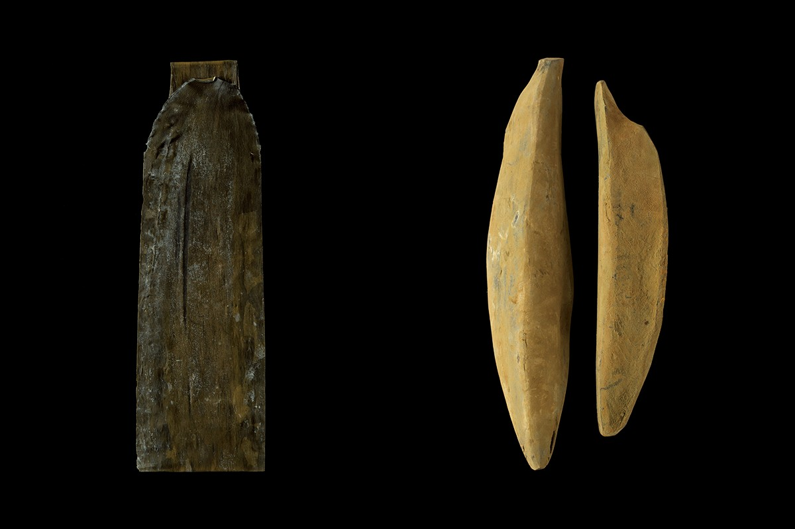
Без даси, бульона, нет японской кухни, и главные его основы, кацуобуси и комбу, могли появиться только в стране, окружённой морем. Делать их долго и трудно, зато вкус и аромат у них ни с чем не сравнить. В Цукидзи есть лавка, которую уважают лучшие повара: «Фусидака», основанная в 1918 году как оптовая рыбная торговля и ставшая потом лавкой кацуобуси. Хозяин в третьем поколении каждое утро проверяет качество стружки: заваривает её в кофеварке, где можно задать одинаковые температуру и время.
Чтобы сделать кацуобуси, сырого бонито разделывают на филе, сначала варят, чтобы мясо не портилось, а потом около трёх недель коптят. Вещества из дыма работают как природный консервант, и бонито становится продуктом долгого хранения. На этом этапе он называется «арабуси».
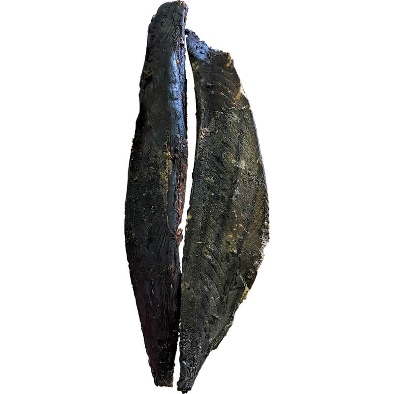
В эпоху Эдо стали продавать «хадакабуси», арабуси с соскобленной чёрной коркой. Пока его везли на кораблях из Кагосимы или с Сикоку в Осаку и Эдо, на нём появлялась плесень и качество падало. Потом заметили, что среди плесени есть полезная, и полезную плесень стали наносить специально. В эпоху Мэйдзи её действие подтвердили учёные, и сложился нынешний способ делать «хонкарэбуси» с несколькими слоями плесени. После войны он стал кацуобуси высшего сорта.
«Сегодня хонкарэбуси строгают для бульона лишь немногие рестораны, почти везде берут стружку из арабуси. У хонкарэбуси вкус и запах глубже и мягче, некоторым этого мало. Арабуси ярче, но кому-то кажется, что пахнет рыбой. Тут нет хорошего и плохого: выбирайте по вкусу»
хозяин «Фусидаки»
Около 90 процентов комбу в Японии добывают на Хоккайдо. Сегодня известно много районов, но первым на стол попал «ма-комбу»: его добывали в море на юге острова, который тогда звали Эдзо, во владениях клана Мацумаэ, правившего этими землями. Торговые суда «китамаэ-бунэ» связывали Эдзо с главным островом Хонсю и уже около XIV века выгружали комбу в первом порту на своём пути, в Цуруге на берегу Японского моря.
Оттуда комбу везли по суше и по озеру Бива в Киото и Осаку. Во второй половине XVII века суда стали ходить в Осаку напрямую, западным морским путём вокруг Хонсю, и комбу стал обычной едой простых людей.
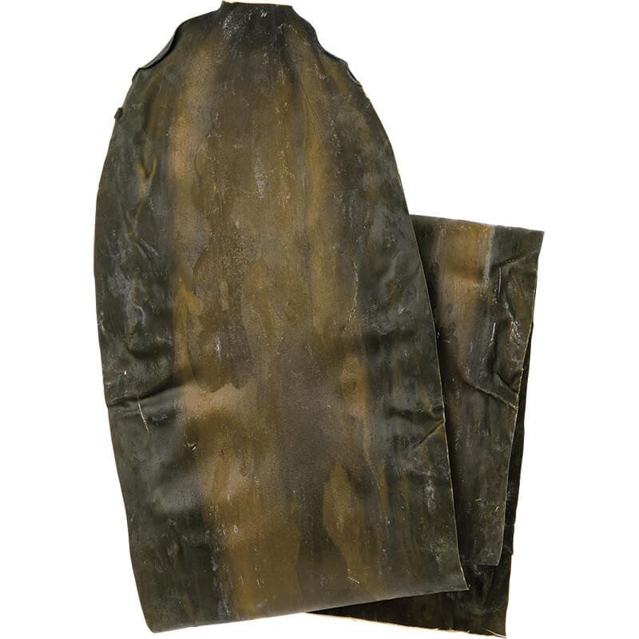
В 2020 году «Фусидака» продавала четыре вида комбу: «ма-комбу», «раусу-комбу», «рисири-комбу» и «хидака-комбу». У каждого района свой вкус и аромат бульона и свои блюда, и сравнивать их интересно. Кроме кацуобуси и комбу в лавке есть сушёные сардинки «нибоси», а стружку пяти видов продают на вес и выбирают под блюдо.
«Фусидака»
- Адрес
- Токио, Тюо, Цукидзи, 6-27-2
- Телефон
- +81 3-3541-0918
- Часы работы
- 6:30–14:30
- Выходные
- воскресенье, праздники, дни, когда не работает рынок
- Сайт
- fushitaka.com
Фото: Асами Эндо, Ямато Нонака.